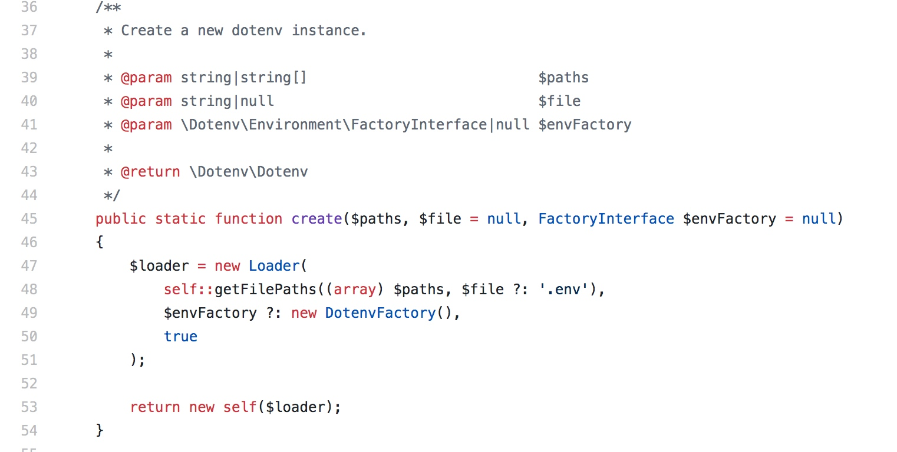

老大说了这个dotenv的重构比较适合用来学习，进行了分析，并分享了出来
github项目地址: https://github.com/vlucas/phpdotenv
dotenv是一个php写的从文件中加载环境变量的库，库本身文件数量较少，比较容易阅读。
核心api变动
2.x实例化方式
$dotenv = new Dotenv\Dotenv(__DIR__, 'myconfig');
$dotenv->load();
3.x实例化方式
$dotenv = Dotenv\Dotenv::create(__DIR__, 'myconfig');
$dotenv->load();
静态工厂方法设计模式应用
这个3.x版本create方法创建对象使用的是工厂方法设计模式
核心实例化dotenv对象由手动调用构造方法重构成了静态工厂方法，这个改变是因为这个dotenv加载.env文件需要判断env文件、envFactory对象是否传递，而这个判断是个if else的逻辑，根据构造方法不宜写逻辑定理，如果不使用静态工厂方法进行重构，那么在new DotEnv之前，必须手动判断.env是否存在。在多次实例化这个Dotenv对象时，必然造成代码重复。
通过工厂方法封装创建对象的逻辑，以避免创建对象的代码重复，是非常常见的一种设计模式的最佳实践
静态方法封装的逻辑

每次创建dotenv实例省掉的这部分代码量还是相当客观的，并且创建的逻辑统一到这一处了，也提高了维护可维护性
目录结构分析
可以看到核心目录3.x比2.x多了Environment和Regex目录
核心文件3.x比2.x多了Lines.php，查看lins.php，可以看到里面全部是静态工具方法
异常3.x比2.x多了InvalidCallbackException
env文件加载-适配器设计模式应用实战
3.x比2.x重要的改变是多了Adapter目录，这个是因为2.x仅支持将.env使用putenv加载到环境变量中，而3.x支持将.env加载到多个环境变量中，包括
- putenv加载到应用环境变量中
- array加载到数组中
- 加载到$_ENV全局变量中
- 加载到$_SERVER全局变量中
可以看到3.x支持设置的目标更多了，但是这4钟加载方式实际执行的代码并不相同，dotenv为了能够统一这四种加载方式的接口，使用了适配器模式进行统一适配成了AdapterInterface接口
每个适配都实现这个接口
在使用时就能无差别对待了，这样无需调用时候的if else判断了
DotenvVariables.php#L81
一些注意的点
接口可替换设计
dotenv库一共包含4个接口
- AdapterInterface
- FactoryInterface
- VariablesInterface
- ExceptionInterface
这些接口都是可替换的，这种面向接口的设计方式使得代码非常容易扩展